Topic 2.9 - Pandas 中自带画图功能¶
在本节开始前，我们先导入一下 Pandas 库：
import pandas as pd
import random
1. Pandas 的绘图功能简介¶
在数据分析的可视化任务中：
- 常用的作图库是 Matplotlib 和 Seaborn
- 但实际上 Pandas 库本身也内置了一些基本的绘图功能，能够满足一些简单的数据可视化需求
- 和专门的作图库相比，Pandas 的绘图功能相对简单，适合快速生成一些基础的图表，讲究的是方便快捷，而不是复杂和美观
- 如果作图目标是快速发现数据中的趋势和模式，Pandas 的绘图功能是一个不错的选择
总的来说，Pandas 绘图的基本语法是 DataFrame.plot() 或 Series.plot()：
- 也就是直接在 DataFrame 或 Series（可以是 DataFrame 的一列或一行） 对象上调用
plot()方法 - 然后指定图表类型和相关参数即可，例如图表类型、数据列、标题、标签等
2. 常见的图表类型及其绘制方法¶
(1) 折线图¶
折线图是最常见的图表类型之一，适合展示数据随时间或其他连续变量的变化趋势。
我们先来准备一组时间序列数据，然后绘制折线图，最好将 index 设置为时间序列，以便更直观地展示数据的变化趋势：
df1 = pd.DataFrame({
"A": [random.randrange(1, 100) for _ in range(10)],
"B": [random.randrange(1, 100) for _ in range(10)],
"C": [random.randrange(1, 100) for _ in range(10)],
}, index=pd.date_range("2023-01-01", periods=10))
df1
| A | B | C | |
|---|---|---|---|
| 2023-01-01 | 13 | 98 | 97 |
| 2023-01-02 | 35 | 7 | 64 |
| 2023-01-03 | 34 | 65 | 21 |
| 2023-01-04 | 69 | 4 | 43 |
| 2023-01-05 | 46 | 42 | 64 |
| 2023-01-06 | 43 | 84 | 89 |
| 2023-01-07 | 29 | 34 | 16 |
| 2023-01-08 | 14 | 98 | 45 |
| 2023-01-09 | 1 | 27 | 5 |
| 2023-01-10 | 29 | 47 | 68 |
- 如果只画一列对应的一条线，可以直接在一列上调用
plot()方法，并强调kind='line'：
df1["A"].plot(kind='line')
<Axes: >
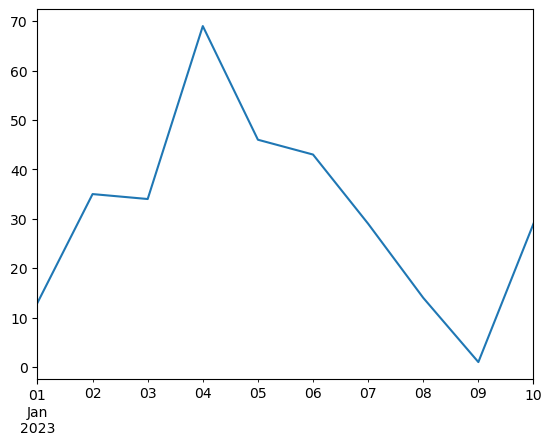
- 如果想将多条线绘制在同一张图上，可以直接在 DataFrame 上调用
plot()方法，并在y参数中指定多列数据：
df1.plot(y=["A", "B"], kind='line')
<Axes: >
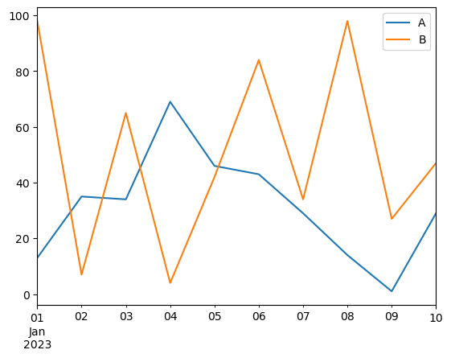
- 如果将所有列都绘制在同一张图上，可以直接在 DataFrame 上调用
plot()方法而不指定列：
df1.plot(kind='line')
<Axes: >
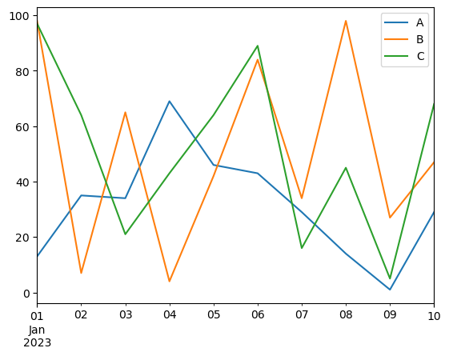
(2) 柱状图¶
柱状图适合展示不同类别之间的比较，常用于显示分类数据的分布情况。
首先，我们准备一组分类数据，然后绘制柱状图，柱状图的数据通常是离散的类别和对应的数值：
df2 = pd.DataFrame({
"A": [random.randrange(10, 100) for _ in range(4)],
"B": [random.randrange(10, 100) for _ in range(4)],
"C": [random.randrange(10, 100) for _ in range(4)]
}, index=["Q1", "Q2", "Q3", "Q4"])
df2
| A | B | C | |
|---|---|---|---|
| Q1 | 83 | 62 | 78 |
| Q2 | 57 | 17 | 87 |
| Q3 | 33 | 16 | 13 |
| Q4 | 49 | 14 | 25 |
- 如果想绘制普通柱状图，我们要在 DataFrame 上调用
plot()方法，指定y参数来绘制柱状图，并强调kind='bar'：
df2.plot(y=['A'], kind='bar')
<Axes: >
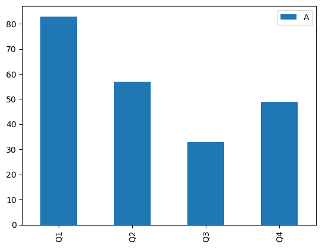
-
如果绘制分组柱状图，则可以在 DataFrame 上调用
plot()方法，指定kind='bar'，Pandas 会自动将不同类别的数据分组显示：- 和折线图一样，如果想绘制多列数据，可以在
y参数中指定多列数据 - 而如果想要绘制所有列的数据，可以直接在 DataFrame 上调用
plot()方法而不指定y参数
- 和折线图一样，如果想绘制多列数据，可以在
df2.plot(y =['A', 'B'], kind='bar')
<Axes: >
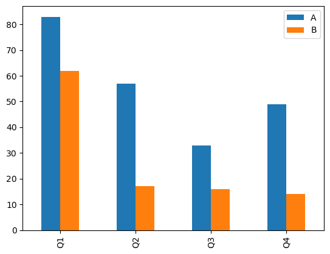
df2.plot(kind='bar')
<Axes: >
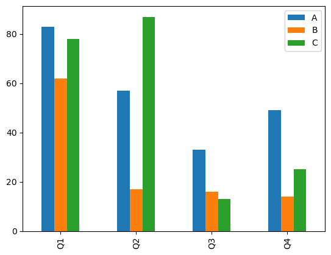
-
如果想绘制堆叠柱状图，可以在
plot()方法中指定kind='bar'并设置stacked=True参数：- 同样，如果想绘制多列数据，可以在
y参数中指定多列数据 - 如果想要绘制所有列的数据，可以直接在 DataFrame 上调用
plot()方法而不指定y参数
- 同样，如果想绘制多列数据，可以在
df2.plot(y=['A', 'B'], kind='bar', stacked=True)
<Axes: >
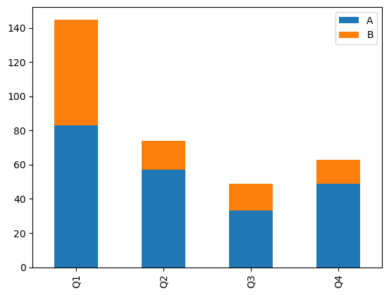
df2.plot(kind='bar', stacked=True)
<Axes: >
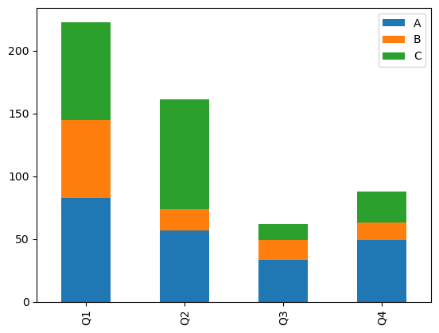
(3) 饼状图¶
饼状图适合展示各部分在整体中所占的比例，常用于显示分类数据的组成情况。
首先，我们准备一组分类数据，然后绘制饼状图，饼状图通常用于显示单个类别的比例分布：
df3 = pd.DataFrame({
"A": [random.randrange(10, 100) for _ in range(4)],
"B": [random.randrange(10, 100) for _ in range(4)],
"C": [random.randrange(10, 100) for _ in range(4)]
}, index=["Q1", "Q2", "Q3", "Q4"])
df3
| A | B | C | |
|---|---|---|---|
| Q1 | 83 | 39 | 63 |
| Q2 | 35 | 82 | 18 |
| Q3 | 95 | 95 | 70 |
| Q4 | 30 | 14 | 81 |
-
在 Pandas 中，饼图和折线图、柱状图有所不同，因为饼图通常是针对单个 Series（即单列数据）进行绘制的：
- 因此，我们需要先选择 DataFrame 中的一列或一行数据，然后在该列上调用
plot()方法，并指定kind='pie'参数即可绘制饼图 - 在整个 DataFrame 上调用
plot()方法是无法直接绘制饼图的
- 因此，我们需要先选择 DataFrame 中的一列或一行数据，然后在该列上调用
-
我们先来看选用一列数据绘制饼图的例子，在上面的数据中，它展示的是同一商品在各季度的销售比例：
df3["A"].plot(kind='pie')
<Axes: ylabel='A'>
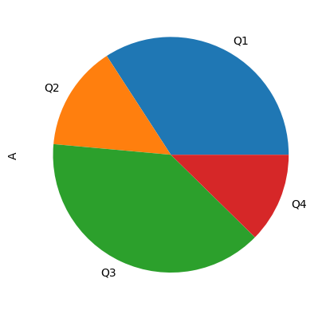
- 我们再来看选用一行数据绘制饼图的例子，这次展示的是各商品在某一季度的销售比例：
df3.loc["Q1"].plot(kind='pie')
<Axes: ylabel='Q1'>
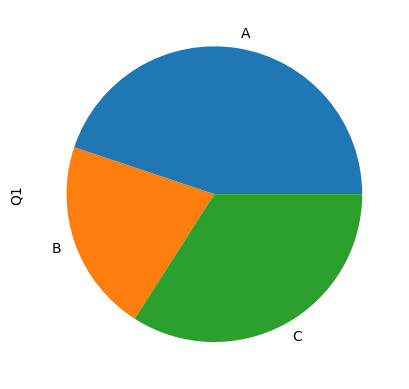
(4) 散点图¶
散点图常用的情景是展示两个变量之间的关系，适合用于探索数据中的相关性。
首先，我们准备一组包含两个变量的数据，然后绘制散点图，要注意散点图的 X 和 Y 都应该是数值型数据：
df4 = pd.DataFrame({
"X": [random.uniform(1, 100) for _ in range(20)],
"Y": [random.uniform(1, 100) for _ in range(20)],
})
df4
| X | Y | |
|---|---|---|
| 0 | 51.553462 | 22.586876 |
| 1 | 53.622465 | 38.644271 |
| 2 | 7.567322 | 37.656261 |
| 3 | 90.576675 | 44.737475 |
| 4 | 92.856210 | 17.032500 |
| 5 | 55.166151 | 31.707984 |
| 6 | 64.575843 | 53.156904 |
| 7 | 95.589727 | 58.635147 |
| 8 | 12.628597 | 78.055815 |
| 9 | 91.520935 | 11.524723 |
| 10 | 77.749923 | 78.860611 |
| 11 | 95.569139 | 99.144078 |
| 12 | 34.903064 | 54.306897 |
| 13 | 52.592837 | 61.907817 |
| 14 | 43.521850 | 13.409684 |
| 15 | 26.351539 | 84.081360 |
| 16 | 35.667794 | 89.842754 |
| 17 | 67.773081 | 61.227916 |
| 18 | 65.024168 | 64.278946 |
| 19 | 54.613929 | 4.357693 |
在绘制散点图的时候，我们需要指定 x 和 y 参数来分别表示横轴和纵轴的数据列，并强调 kind='scatter' 参数：
df4.plot(kind='scatter', x='X', y='Y')
<Axes: xlabel='X', ylabel='Y'>
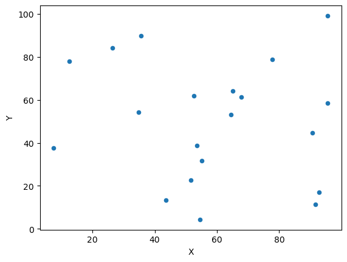
(5) 其他的图表类型¶
事实上，通过上面几种常见的图表类型，大家已经可以体会到 Pandas 绘图功能的基本用法了：
- 其实就是在 DataFrame 或 Series 对象上调用
plot()方法 - 之后，指定
kind参数来选择图表类型 - 使用
x和y参数来指定数据列
Pandas 当中还支持其他类型的图表，我们这里就不一一展示了，这些图表都符合上述的基本用法：
- 箱线图（Box Plot）：
kind='box' - 直方图（Histogram）：
kind='hist' - 面积图（Area Plot）：
kind='area' - 等等
3. 常见的图表装饰方法¶
在 plot() 方法中，我们还可以使用一些常见的参数来装饰图表，使其更具可读性和美观性。
(1) 添加标题和标签¶
在 plot() 方法中，添加文字标题和标签的方法包括：
title：设置图表标题xlabel：设置 X 轴标签ylabel：设置 Y 轴标签
df5 = pd.DataFrame({
"A": [random.randrange(10, 100) for _ in range(4)],
"B": [random.randrange(10, 100) for _ in range(4)],
"C": [random.randrange(10, 100) for _ in range(4)]
}, index=["Q1", "Q2", "Q3", "Q4"])
df5
| A | B | C | |
|---|---|---|---|
| Q1 | 76 | 16 | 11 |
| Q2 | 77 | 18 | 56 |
| Q3 | 63 | 21 | 86 |
| Q4 | 81 | 30 | 86 |
df5.plot(kind='line',
title='Sales Over Quarters',
xlabel='Quarter',
ylabel='Sales Amount')
<Axes: title={'center': 'Sales Over Quarters'}, xlabel='Quarter', ylabel='Sales Amount'>
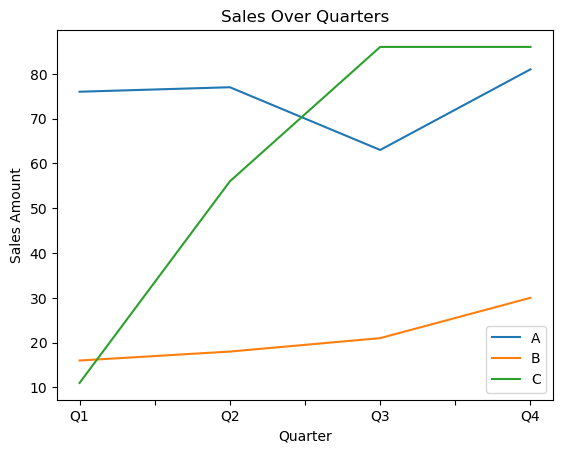
(2) 设置图例¶
图例通常是 plot() 函数自动生成的，但我们也可以通过 legend 参数来控制图例的显示：
legend=True：显示图例legend=False：隐藏图例
df5.plot(kind='line',
title='Sales Over Quarters',
xlabel='Quarter',
ylabel='Sales Amount',
legend=False)
<Axes: title={'center': 'Sales Over Quarters'}, xlabel='Quarter', ylabel='Sales Amount'>
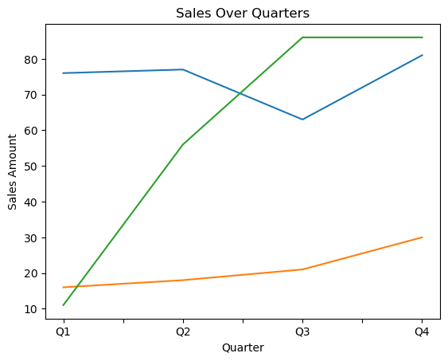
(3) 设置图表大小¶
在 plot() 方法中，可以使用 figsize 参数来设置图表的大小：
- 这个方法传入一个元组
figsize=(width, height)：指定图表的宽度和高度，单位为英寸 - 这里的英寸指的是物理尺寸，而不是像素尺寸，因此实际显示效果还会受到显示设备分辨率的影响
df5.plot(kind='line',
title='Sales Over Quarters',
xlabel='Quarter',
ylabel='Sales Amount',
legend=False,
figsize=(6, 4))
<Axes: title={'center': 'Sales Over Quarters'}, xlabel='Quarter', ylabel='Sales Amount'>
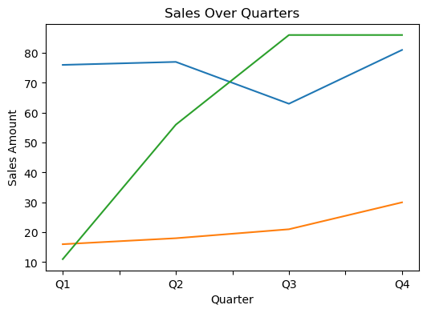
4. Pandas 自带图表与 Matplotlib 的关系¶
事实上，Pandas 自带的绘图功能实际上是基于 Matplotlib 库实现的：
- 因此，我们可以在使用 Pandas 绘图时，同时利用 Matplotlib 的一些高级功能来进一步定制图表
- 而且之后，我们学到一些 Matplotlib 的知识后，也可以将其应用到 Pandas 绘图中，从而实现更复杂和美观的图表效果
- 这里我们举个例子，比方说，我们可以使用 Pandas 绘制一个简单的折线图，然后利用 Matplotlib 来添加更多的自定义元素，比如网格线、注释等：
df5 = pd.DataFrame({
"A": [random.randrange(10, 100) for _ in range(4)],
"B": [random.randrange(10, 100) for _ in range(4)],
"C": [random.randrange(10, 100) for _ in range(4)]
}, index=["Q1", "Q2", "Q3", "Q4"])
df5
| A | B | C | |
|---|---|---|---|
| Q1 | 64 | 42 | 55 |
| Q2 | 69 | 52 | 92 |
| Q3 | 44 | 57 | 48 |
| Q4 | 41 | 83 | 38 |
import matplotlib.pyplot as plt
df5.plot(kind='line',
title='Sales Over Quarters',
xlabel='Quarter',
ylabel='Sales Amount')
plt.grid(True)
plt.show()
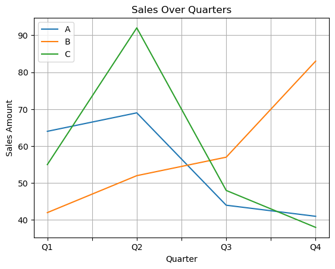
当然，两种库的绘图代码混用可能会有些问题：
- 一是版本冲突和兼容性的问题
- 二是代码风格和习惯的问题
- 因此，在实际项目中，建议尽量选择一种绘图库进行绘图，避免混用带来的潜在问题